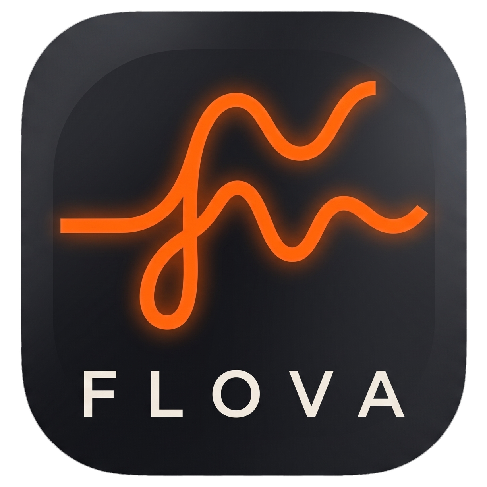

FLOVAGizlilik politikası
Bu metin, Flova Audio Studio web sitesi (flova.serdararikan.net) ve Flova Android uygulaması için geçerlidir. Flova'da reklam, analiz ya da izleme aracı yoktur; verileriniz satılmaz ve başkalarıyla paylaşılmaz.
Cihazınızda kalanlar
Kırpma, efektler, birleştirme, format dönüştürme ve dışa aktarma cihazınızda (sitede tarayıcınızda) yapılır; bu işlemler için ses dosyalarınız hiçbir yere gönderilmez. Uygulama son çalışmanızı, içe aktardığınız dosyaların kopyalarını ve ayarlarınızı yalnızca kendi depolama alanında tutar. Uygulamayı kaldırdığınızda bunlar da silinir.
Sunucuya gönderilenler
Yapay zekâ özellikleri (vokal ayırma, enstrüman ayırma, gürültü temizleme, şarkı sözü çıkarma) ve uygulamadaki MP3 dönüştürme için seçtiğiniz ses, Hugging Face Spaces üzerinde çalışan Flova sunucusuna gönderilir. Bu dosyalar hesabınızla ilişkilendirilmez, yalnızca istediğiniz işlem için kullanılır ve en geç iki saat içinde sunucudan silinir.
Hesap ve bulut projeleri
Hesap açmak isteğe bağlıdır. Hesap açarsanız şunlar saklanır:
- E-posta adresiniz ve görünen adınız,
- Şifreniz (yalnızca geri çevrilemeyen bir özet olarak),
- Tema ve aktarım biçimi gibi ayarlarınız,
- Buluta kaydettiğiniz projeler ve bu projelerin ses dosyaları.
Bu veriler Supabase altyapısında tutulur ve yalnızca sizin hesabınızla erişilebilir. Sildiğiniz projeler 30 gün çöp kutusunda kalır, sonra kalıcı olarak silinir. Hesap onayı ve şifre sıfırlama e-postaları Resend aracılığıyla gönderilir.
Web sitesi yazı tiplerini Google Fonts'tan yükler; bu sırada tarayıcınız Google'a IP adresinizi iletir.
Hesabınızı silme
Hesabınızı istediğiniz zaman kendiniz silebilirsiniz:
- Uygulamada: menü → hesabınız (Profil) → Hesabı sil.
- Web sitesinde: flova.serdararikan.net → sağ üstteki hesap düğmesi → Hesabı sil.
Silme anında yapılır ve geri alınamaz: hesabınız, profiliniz, ayarlarınız, buluttaki tüm projeleriniz ve ses dosyalarınız kalıcı olarak silinir.